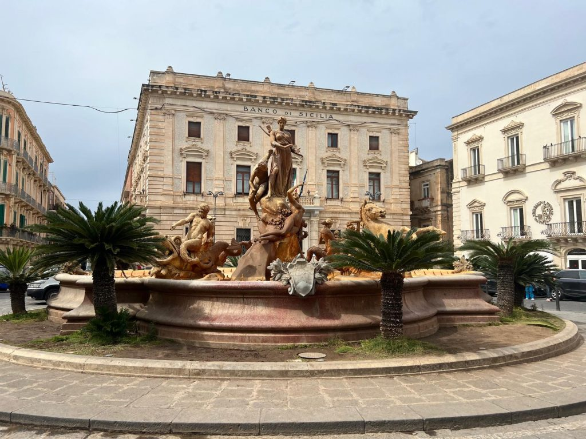

Il Fontana di Diana, un centro di stupefacente bellezza di Piazza Archimede in Ortigia, a Siracusa, è molto più di un semplice punto di riferimento decorativo: è una vivida rappresentazione di mitologia, storia e genialità artistica. Questa grandiosa fontana barocca, ornata da sculture dinamiche e figure allegoriche, incarna il fascino duraturo di mitologia classica e lo spirito artistico di Siracusa.Immerso nella Piazza Archimedeuna delle piazze più vivaci di Ortigia, la Fontana di Diana è più di un'opera d'arte: è una polo sociale e culturale. La piazza, circondata da edifici storici e da vivaci caffè, è l'ambiente perfetto per gli abitanti del luogo e per i turisti, che possono ammirare la fontana e immergersi in un'atmosfera vivace. Di giorno, la piazza si riempie del brusio delle conversazioni, del profumo della cucina siciliana e del fascino degli artisti di strada. Di notte, l'illuminazione della fontana aggiunge un tocco di magia, rendendola un luogo privilegiato per tranquille passeggiate serali e catturando l'essenza romantica di Ortigia.